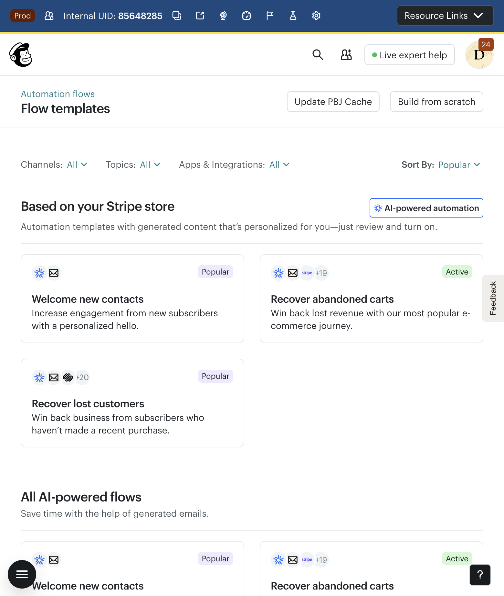
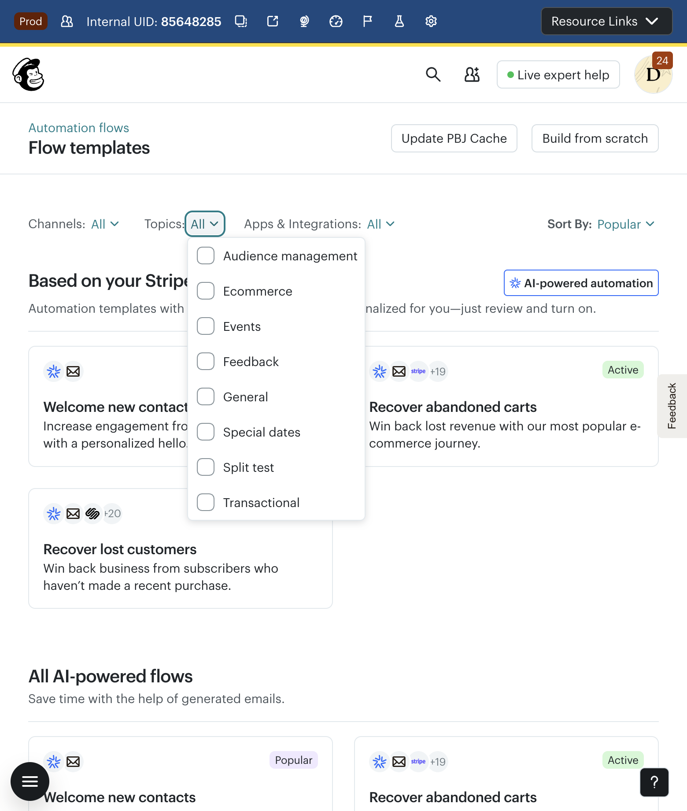
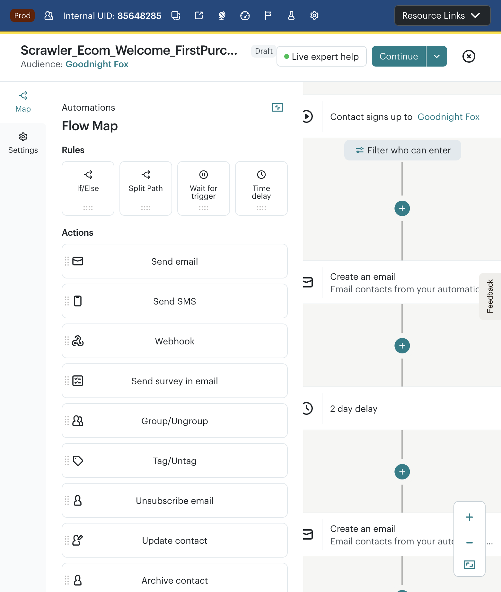
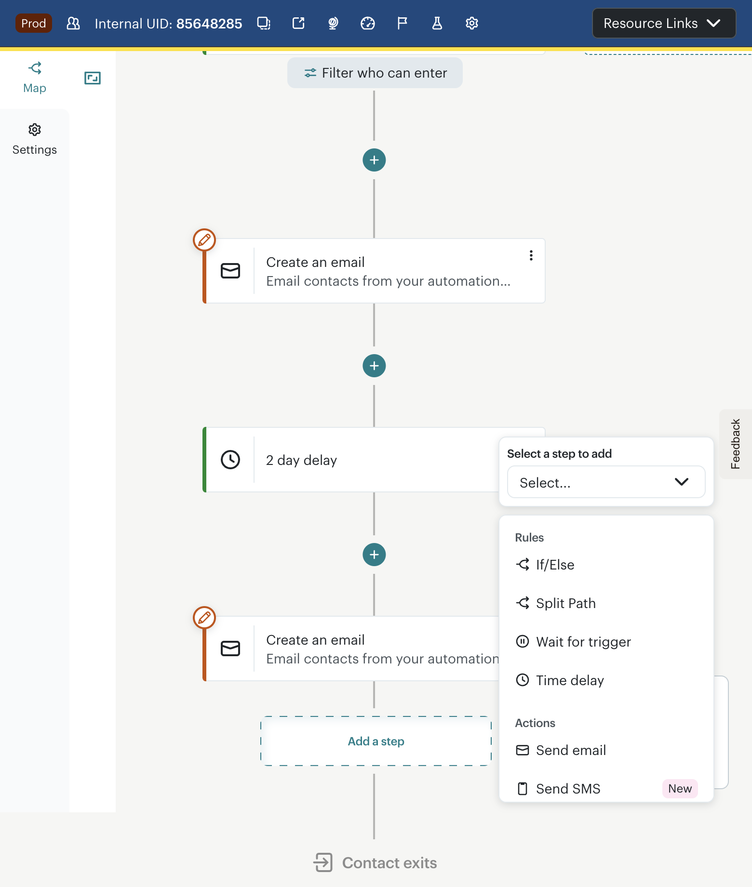
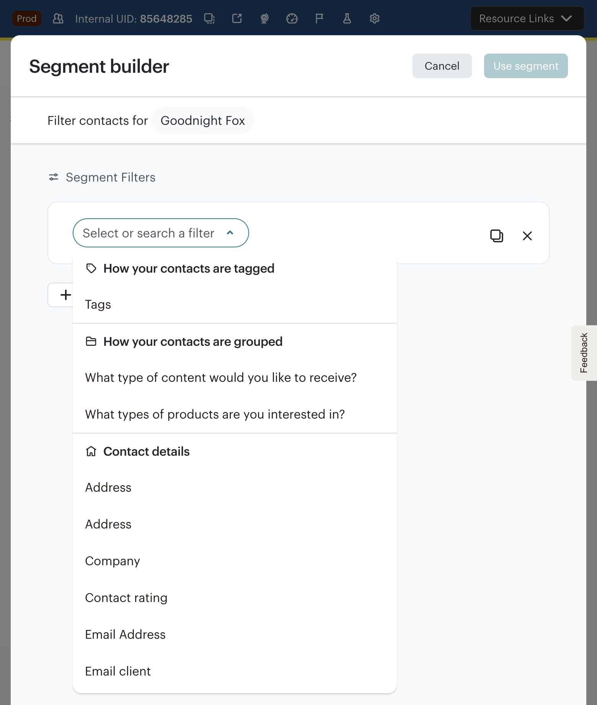
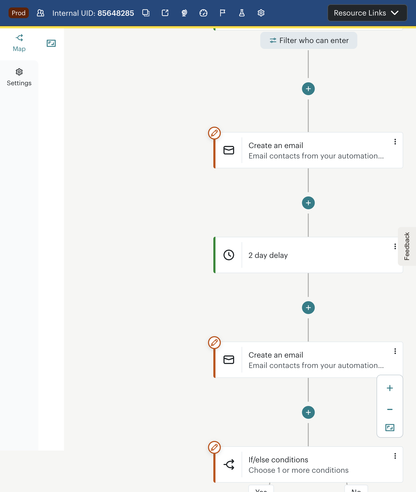
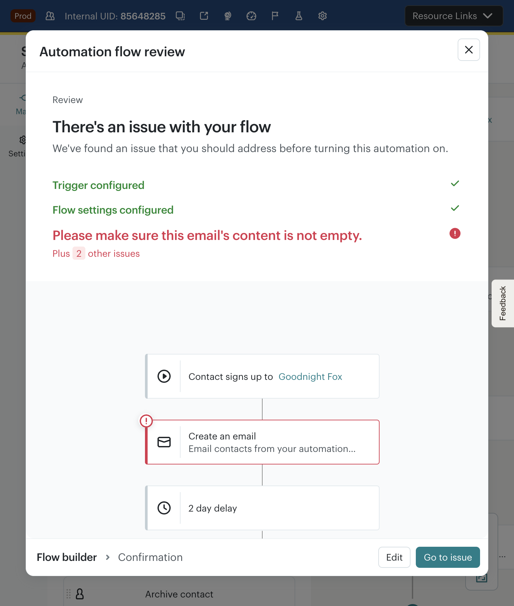
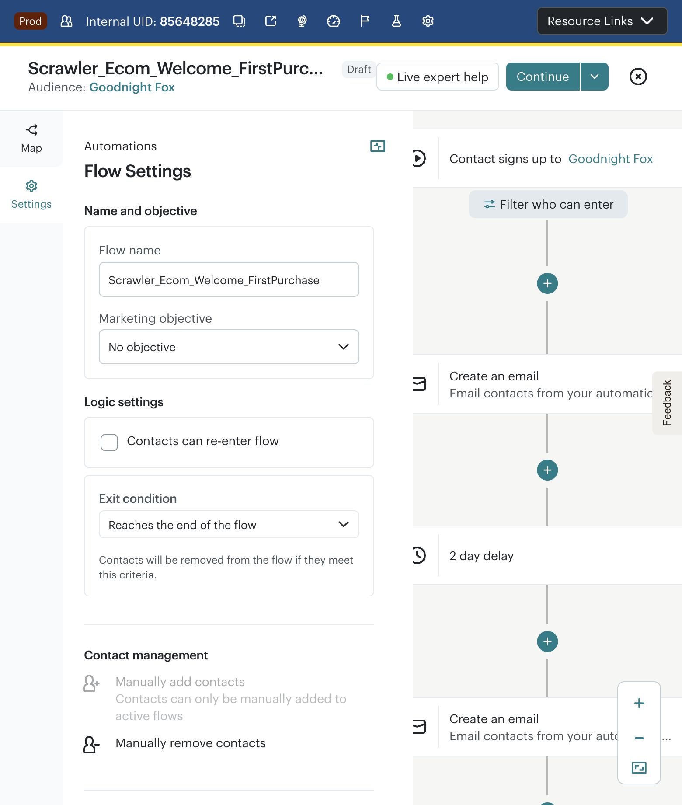
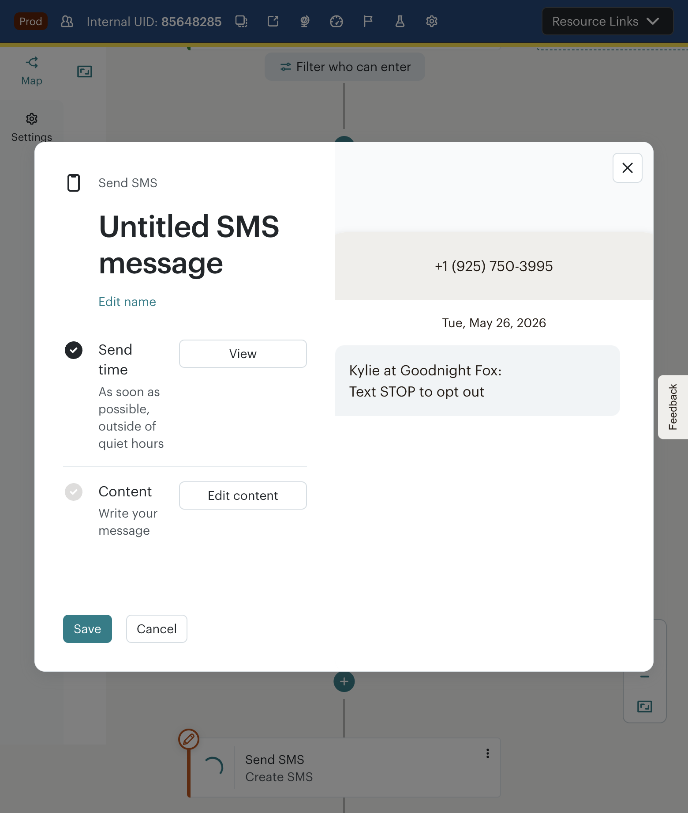
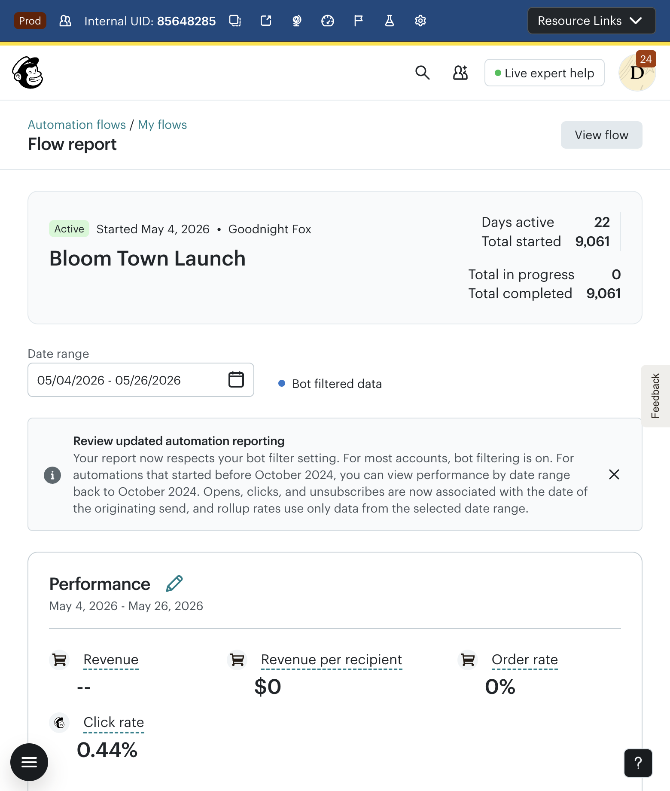

Automated Test Suite · Mailchimp Customer Journey Builder · Goodnight Fox (us17) · May 26, 2026
This audit extends the initial marketer audit with 7 new automated test cases covering template discovery, branching logic, SMS multi-channel, flow settings, validation, activation gates, and active flow analytics. We found 12 new issues (4 usability, 3 barriers, 3 bugs, 2 structural gaps) across all 8 workflow stages. Two areas passed cleanly: the validation checklist and SMS availability. The dominant pattern: features exist but are hard to discover, hard to configure, and hard to trust.

The template gallery has filter dropdowns (Channels, Topics, Apps & Integrations) but no free-text search. A marketer who knows they want a "birthday" or "win-back" template must browse through 80+ cards across 6 category sections. Klaviyo provides instant search with type-ahead.

The first two sections — "Based on your Stripe store" and "All AI-powered flows" — show identical Welcome/Abandoned Cart/Win-back templates. This creates visual clutter and the impression that CJB only has 3 core flows.

The sidebar palette shows step cards with grip handles, implying drag-and-drop. Clicking a sidebar card activates it but the user must then locate a "+" zone on the canvas to drop it. The alternative: click a "+" on the canvas, which opens a dropdown. Two different interaction models for the same action creates confusion. Browser automation could not reliably use drag-and-drop, confirming this is a barrier for accessibility and keyboard-only users.

The inline dropdown is accessible, keyboard-navigable, and labels new features clearly. This should be the primary step-add pattern; the drag-and-drop sidebar should be secondary.

Adding an If/Else rule opens Mailchimp's full-page Segment Builder modal (same as audience segmentation). For a simple branch like "has tag X" or "opened previous email", this is overwhelming. The filter list mixes account-specific merge fields (e.g., "How old is your toddler?", "Yotpo", "Yotpo 2", "Yotpo 3") with system conditions, making it hard to find standard branching options. Klaviyo uses a focused inline condition picker within the flow canvas.
Positive: The search field ("Select or search a filter") does work — you can type to filter conditions. This is a notable improvement over the trigger picker which has no search.

The Yes/No branches are visually clear and the warning icon correctly indicates an unconfigured state. The context menu (Pause, Edit, Copy, Delete) provides expected management actions.

The validation checklist correctly identifies that the flow is not ready (trigger OK, settings OK, email content empty). However, it only shows the first error and hides additional issues behind "Plus 2 other issues" — without expanding them automatically. A marketer cannot see the full list of what needs fixing without extra clicks. The "Go to issue" button navigates to the first error only.
Positive: The validation checklist does exist and correctly blocks activation of incomplete flows. This is a significant improvement over what we observed in the earlier audit, where the Continue button's state was opaque. The validation is the right pattern; it just needs to show all issues upfront.

Present: Name, objective, re-entry, exit condition, manual contact add/remove, GA tracking, click/open tracking. Missing: Send time optimization (Smart Send Time), send throttling/rate limiting, A/B test configuration at the flow level, flow-level scheduling (business hours only), UTM parameter customization, quiet hours configuration for the flow (only available per-SMS step). Compared to Klaviyo's flow settings which include Smart Send Time, throttling, and skip-on-recent-email rules, Mailchimp's settings are basic.

SMS steps can be added to CJB flows from the canvas picker. The step is labeled "New" confirming recent addition. The configuration modal shows send time, content editing, and a real-time preview with the account's registered phone number. No separate SMS opt-in setup is required inline — it uses the account's existing SMS program.
While email steps offer a full visual builder with templates, the SMS step provides only a text-entry field with a character counter. No merge tag assistant, no link shortener preview, no A/B testing of SMS variants. The "quiet hours" setting is appreciated but not configurable per-flow (only per-step).

The flow report shows basic throughput metrics (started/in-progress/completed) and e-commerce performance (revenue, order rate, click rate). However:
• No per-step metrics: Cannot see which email in the flow performs best. No step-level open/click rates on the report page.
• No conversion funnel visualization: No visual showing drop-off between steps. Klaviyo shows a flow-level funnel with conversion rates at each node.
• Revenue shows "--" even for e-commerce flows: With 9,061 completed contacts and 0% order rate, the revenue display shows "--" instead of "$0" — inconsistent with the $0 revenue-per-recipient.
• No comparison to benchmarks: 0.44% click rate has no context. Is this good or bad for this type of flow?
• No "next action" recommendations: No AI-powered suggestions for improving the flow's performance.
| # | Issue | Type | Severity | Stage | Competitive Gap |
|---|---|---|---|---|---|
| 1 | Template gallery has no search bar | Usability | P2 | 1 — Discover | Klaviyo: instant type-ahead search |
| 2 | Topics taxonomy excludes ProServ/B2B | Barrier | P2 | 1 — Discover | All competitors offer more vertical-specific templates |
| 3 | AI-powered templates duplicate regular templates | Usability | P3 | 1 — Discover | — |
| 4 | Exit conditions limited and buried in Settings | Barrier | P2 | 2 — Define | Klaviyo: goal-event exit on canvas |
| 5 | Sidebar uses drag-only; canvas uses click-to-add | Usability | P2 | 3 — Design | Accessibility & consistency issue |
| 6 | SMS editor minimal vs. email builder | Usability | P3 | 3 — Design | Klaviyo/Attentive: richer SMS editors |
| 7 | If/Else opens heavyweight Segment Builder | Usability | P2 | 5 — Target | Klaviyo: inline condition picker |
| 8 | Missing flow-level settings (Smart Send Time, throttle) | Barrier | P3 | 6 — Validate | Klaviyo: Smart Send Time, skip-on-recent |
| 9 | Validation hides errors behind "Plus N issues" | Usability | P2 | 7 — Activate | — |
| 10 | "Edit" vs "Go to issue" buttons ambiguous | Usability | P3 | 7 — Activate | — |
| 11 | Flow report lacks per-step metrics & funnel | Barrier | P2 | 8 — Monitor | Klaviyo: per-node metrics on canvas |
| 12 | Revenue shows "--" inconsistently with $0 RPR | Bug | P3 | 8 — Monitor | — |
| Stage | Issues | Worst Severity | Tested By |
|---|---|---|---|
| 1 — Discover | 3 | P2 | Test 1: Template Gallery |
| 2 — Define | 1 | P2 | Test 6: Exit Rules |
| 3 — Design | 2 | P2 | Test 5: SMS Step |
| 4 — Compose | 0 | — | (Covered by marketer audit) |
| 5 — Target | 1 | P2 | Test 2: If/Else |
| 6 — Validate | 1 | P3 | Test 4: Settings |
| 7 — Activate | 2 | P2 | Test 3: Turn On |
| 8 — Monitor | 2 | P2 | Test 7: Analytics |
| Issue | Fix | Expected Impact |
|---|---|---|
| Template gallery no search | Add typeahead search bar to template gallery (same as trigger picker fix) | Reduce template discovery time from browsing 80+ cards to instant match |
| Exit conditions buried | Make "Contact exits" label on canvas clickable; open goal-event exit configuration | Enable purchase-exit flows without digging into Settings |
| If/Else opens full Segment Builder | Build lightweight inline condition picker for common branching (tags, engagement, purchase); link to full builder for advanced | Reduce branching setup from 30s+ to <10s for common conditions |
| Validation hides issues | Expand all validation errors by default in the review modal | Marketers see complete fix list on first attempt |
| Flow report lacks per-step metrics | Show open/click rates per email node on report page; add funnel visualization | Enable data-driven flow optimization without exporting to spreadsheets |
| Issue | Fix | Expected Impact |
|---|---|---|
| Topics taxonomy | Add B2B/ProServ/SaaS topic categories to template gallery | Reduce blank-canvas starts for non-DTC users |
| Sidebar drag-only | Make sidebar cards clickable (click to select, then click "+" to place) | Improve accessibility and reduce click confusion |
| SMS editor minimal | Add merge tag picker, link shortener, character/segment counter | Bring SMS authoring closer to email builder parity |
| Missing flow settings | Add Smart Send Time, throttling, skip-on-recent-email at flow level | Close competitive gap with Klaviyo's flow-level optimization |